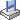
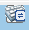
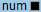

Function Description
On the Java Integrated Remote Console, you can access and manage a server, install or repair the OS, and install drivers on the server.
With the Integrated Remote Console, you can:
- Use the keyboard and mouse of the local PC to remotely manage the server.
- Enable the server to remotely access the local PC over a network using a virtual floppy disk drive (FDD) or DVD-ROM drive. To the server, the use of the virtual FDD or virtual DVD-ROM drive is the same as the use of a physical USB device.
Icon |
Description |
|---|---|
|
Locks the toolbar. |
|
Hides the toolbar. |
|
Shows the server desktop in full-screen mode. NOTE:
To switch from full-screen mode to windowed mode, move the pointer to the top of the full-screen or press Ctrl+Alt+Shift to display the tool bar and press . |
|
Synchronizes the mouse location. NOTE:
This button is available only after you click Change Mouse Mode when the server desktop is displayed in full screen and Mouse Control is Single Mouse. |
|
Changes the mouse mode. NOTE:
This button is available only when the server desktop is displayed in full screen and Mouse Control is Single Mouse. |
|
Returns to the server desktop in windowed mode. NOTE:
This button is available on the toolbar only when the server desktop is displayed in full screen mode. |
|
Displays the power control menu, which includes the following:
|
|
Records a video for the operations performed on the server. |
|
Controls the server mouse. The control operations include the following:
Default setting: Mouse Acceleration NOTE:
|
|
Selects and uses a virtual DVD-ROM drive. NOTE:
The virtual DVD-ROM drive and virtual FDD are compound devices. When a virtual DVD-ROM drive is connected to the server, the server also identifies a virtual FDD without media. You can use the virtual FDD by following the normal procedure. |
 |
Selects and uses a virtual floppy disk drive. NOTE:
The virtual DVD-ROM drive and virtual FDD are compound devices. When a virtual FDD is connected to the server, the server also identifies a virtual DVD-ROM drive without media. You can use the virtual DVD-ROM drive by following the normal procedure. |
|
Uses a DVD-ROM drive or FDD to create an image file. |
|
Sends or customizes combination keys. The combination keys are described as follows:
NOTE:
The combination keys and their functions vary with the operating system. The combination keys and their functions described here are only for Windows. |
 |
Customizes the client keyboard. By default, the BMC automatically selects the type of the client keyboard to be used. If the keyboard automatically selected does not function well, you can manually specify the keyboard type.
|
Image Clarity |
Adjusts the image clarity of the server desktop. |
 |
Indicates the status of the Num Lock key on the server. |
|
Indicates the status of the Caps Lock key on the server. |
|
Indicates the status of the Scroll Lock key on the server. If you press Ctrl+S by mistake after entering the Linux character mode, the screen is locked. Press Scroll Lock to unlock the screen. NOTE:
|
|
Displays help information. |
Note: The icons on the Remote Virtual Console screen and their functions vary according to the server model. |
|


GUI
Choose Remote Console from the main menu, and click Java Integrated Remote Console (Shared) or Java Integrated Remote Console (private).
The KVM screen is displayed.

If you click Java Integrated Remote Console (Shared), two users are allowed to simultaneously access and perform operations on the server. Each user can view the operations performed by the other user, which causes security risks.
Table 2 describes the areas.
Area |
Function |
|---|---|
Title bar |
The title bar on the top of the KVM screen displays the IP address of the BMC and the product serial number of the server. |
Toolbar (top) |
The icons on the toolbar can be used to remotely manage the server. |
Server desktop (middle) |
You can use the mouse and keyboard on your local PC to manage the server on a real-time basis. |
Status bar (bottom) |
Displays tips for the server desktop and data about communication between the server and the local PC on a real-time basis. |
Sending a Combination Key
- On the KVM screen, click
 on the toolbar.
on the toolbar.The combination key dialog box is displayed.
- Click a combination key.
The server performs the operation defined by the combination key.
If you want to customize a combination key, enter the keys in the text box next to Custom and click Send.
Specifying the Client Keyboard
On the KVM screen, click on the toolbar and select the keyboard to be used.
Mounting a DVD-ROM Drive
Mount the DVD-ROM drive on the local PC to the server.
- On the KVM screen, click
 on the toolbar.
on the toolbar.
- Select CD/DVD.
- Select the drive letter of the DVD-ROM drive on the local PC from the drop-down list, for example, G:.
- Click Connect.
The DVD-ROM drive of the local PC is mounted to the server.
To unmount the DVD-ROM drive, click Disconnect. Then, click Yes in the Confirm dialog box displayed.
Loading an Image File from the Local PC Through the Virtual DVD-ROM Drive
Mount the DVD-ROM drive on the local PC and load an image file from the local PC to the server.
- On the KVM screen, click on the toolbar.
- Select Image File.
- Click Browse.
The Open dialog box is displayed.
- Select the image file on the local PC, and click Open.
- Click Connect.
The virtual DVD-ROM drive is successfully mounted to the server and the image file is successfully loaded.
- To load another image file, click Eject to eject the existing DVD image file, select the new DVD image file, and click Insert.
- To unmount the virtual DVD-ROM drive, click Disconnect. Then, click Yes in the Confirm dialog box.
Mounting a Virtual FDD
Mount the FDD on the local PC to the server.
- On the KVM screen, click on the toolbar.
- Select Floppy.
- Select the drive letter of the FDD on the local PC from the drop-down list, for example, A:.
- Select the Write Protect check box.
Write Protect is a mechanism that prevents alteration or erasure of important data. If Write Protect is selected, data cannot be written to the specified FDD.
- Click Connect.
The FDD is mounted to the server.
To unmount the FDD, click Disconnect. Then, click Yes in the Confirm dialog box.
Loading an Image File from the Local PC Through the Virtual FDD
Mount the FDD of the local PC and load an image file from the local PC to the server.
The size of the image file to be mounted must be 1.44 MB. Otherwise, the image file cannot be mounted.
- On the KVM screen, click on the toolbar.
- Select Image File.
- Click Browse.
The Open dialog box is displayed.
- Select the image file on the local PC, and click Open.
- Click Connect.
The image file is successfully loaded to the server.
- To load another image file, click Eject to eject the existing virtual FDD, select the new image file, and click Insert.
- To unmount the virtual FDD, click Disconnect. Then, click Yes in the Confirm dialog box.
Creating an Image File
Create an image file with the help of the floppy disk on the FDD or DVD-ROM on the DVD-ROM drive of the local PC. The created image file is stored on the local PC.
Before performing this operation, ensure that a floppy disk has been inserted into the FDD or a DVD-ROM has been inserted into the DVD-ROM drive of the local PC.
- On the KVM screen, click
 on the toolbar.
on the toolbar. - Select the drive letter of the FDD or DVD-ROM drive on the local PC from the Driver drop-down list.
- Click Browse. The Save dialog box is displayed.
- Specify a directory for saving the image file, and enter the file name in the File Name text box.
You can create only *.iso image files using the DVD-ROM drive and *.img image files using the FDD.
- Click Save.
- Click Make.
Progress indicates the progress of the image file creation.
To stop creating an image file, click Stop.
Mounting a Virtual Directory
Mount the directories on the local PC to the server so that the server can access the local directories in read-only mode.

Before mounting a directory, copy the required files to the directory. After the directory is mounted, you cannot add files to the directory or delete files from it.
- On the KVM screen, click on the toolbar.
- Click the Directory option button.
- Click Browse.
The dialog box for selecting a local directory is displayed.
- Select the directory and click Open.
- Click Connect.
- If the connection is successful, the virtual directory is displayed in the server OS list. You can copy files from this directory.
- To unmount the virtual directory, click Disconnect.
Powering On the Server
- On the KVM screen, click
 on the toolbar, and choose Power On from the menu.
on the toolbar, and choose Power On from the menu.The Select an Option dialog box is displayed.
- Click OK.
The server power-on time varies depending on the server configuration.
Powering Off the Server
- Before powering off the server, ensure that all services are stopped.
- Select a power-off mode based on your requirements. For details about the difference between the power-off modes, see in the BMC User Guide.
- On the KVM screen, click on the toolbar, and choose Power Off from the menu.
The Select an Option dialog box is displayed.
- Click OK.
Forcibly Resetting or Power Cycling the Server
- A forced reset or power cycle may damage user programs or unsaved data.
- Before forcefully resetting the system or forcefully power cycling the server, ensure that no service risk exists.
- Select a reset mode (Forced System Reset or Forced Power Cycle) based on service requirements. For details about the difference between the power-off modes, see in the BMC User Guide.
- On the KVM screen, click on the toolbar, and choose Forced System Reset or Forced Power Cycle from the menu.
The Select an Option dialog box is displayed.
- Click OK.
The reset or power cycle duration varies depending on the server configuration.
Resetting the Keyboard and Mouse
Simulate the removal and installation of a USB keyboard and mouse when the keyboard and mouse on the server desktop stop responding.
- On the KVM screen, click
 on the toolbar, and choose Mouse & Key Reset from the menu.
on the toolbar, and choose Mouse & Key Reset from the menu.The Select an Option dialog box is displayed.
- Click OK.
The USB keyboard and mouse are reset.
Recording a Video of the Server Desktop
Record a video of the desktop displayed on the Remote Virtual Console.
- On the KVM screen, click
 on the toolbar.
on the toolbar.The Select an Option dialog box is displayed.
- Click OK.
The Save dialog box is displayed.
- Select a directory for saving the video file to be recorded, and enter a file name in the File Name text box.
- Click Save.
The KVM screen is displayed, and the video recording starts.
- After the video is recorded, click
 .
.The Select an Option dialog box is displayed.
- Click OK.
The video file is saved to the specified directory.
The video file is a .rep file. You can play the video file on the Play Back page.
Using a Single Mouse
If the mouse on the local PC is not synchronized with the server desktop, use the single-mouse function to hide the mouse on the local PC and display only the mouse of the server desktop on the KVM screen.
- On the KVM screen, click on the toolbar, and choose Single Mouse from the menu.
The Select an Option dialog box is displayed.
- Click OK.
Only the mouse on the server desktop is displayed on the KVM screen.
Accelerating the Remote Mouse
Accelerate the mouse on the server desktop to synchronize it with the mouse on the local PC.
- On the KVM screen, click on the toolbar, and choose Mouse Acceleration from the menu.
The Select an Option dialog box is displayed.
- Click OK.
The server mouse is synchronized with the mouse on the local PC.